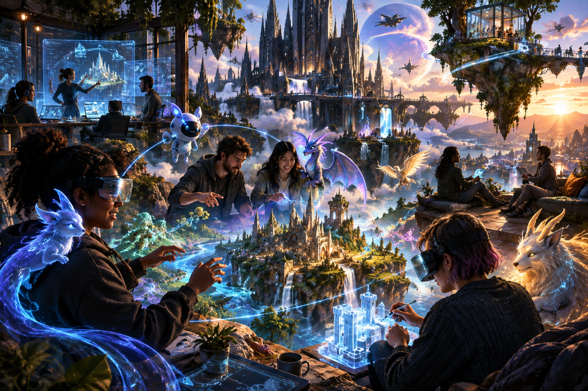
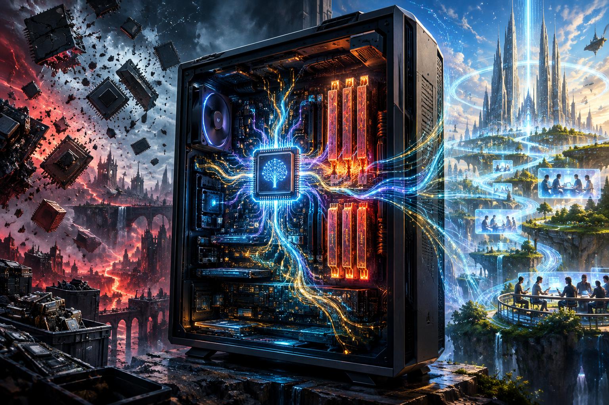
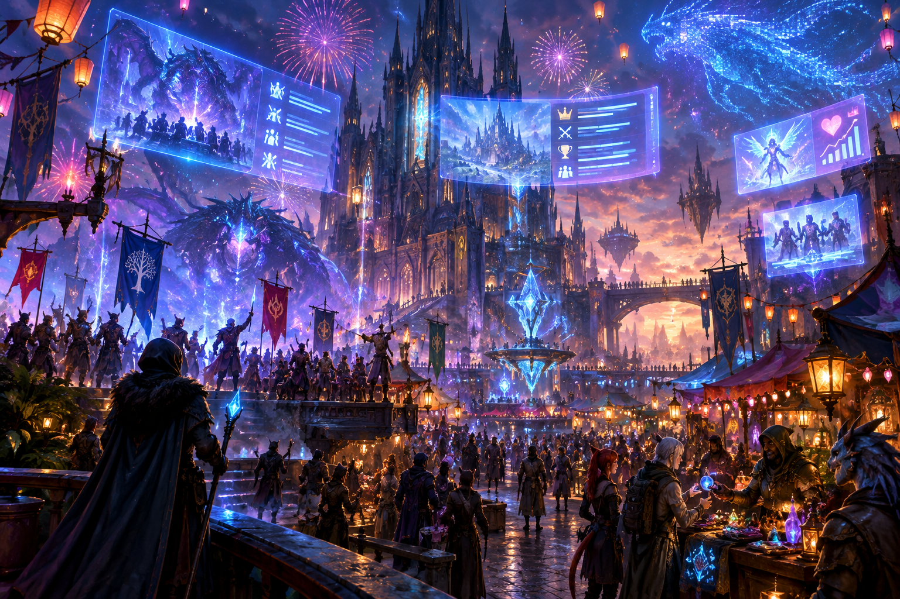
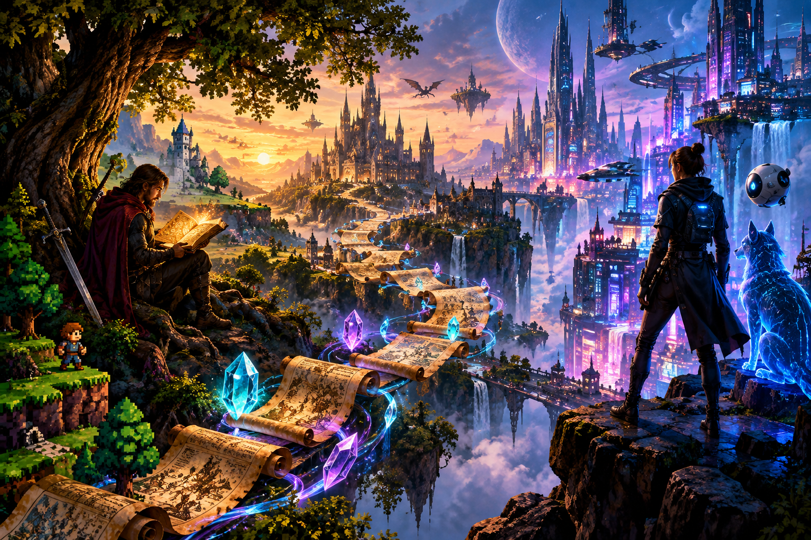
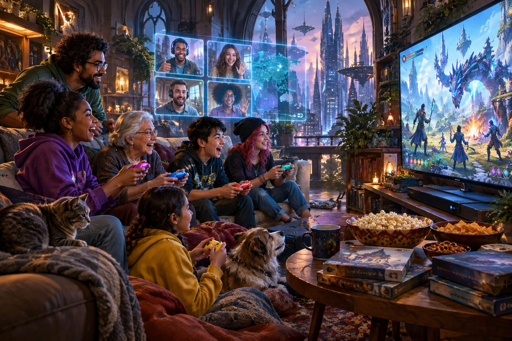

Pixels, People, and Personalization: The New Heart of Gaming Culture in 2026
How AI-driven personalization, participatory narratives, and direct player-developer relationships are reshaping the cultural fabric of gaming in 2026.
READ THE STORY ↗
Rendering the Future: How AI-Centric PCs and Resourceful Gamers Are Redefining Performance in 2026
PC gaming hardware has entered an age of transformation, where breakthrough AI-enabled features intersect with a global memory crunch. As chip demand, prices, and technological expectations all rise, gamers chart a new course—blending adaptation with innovation for the next performance leap.
READ THE STORY ↗
Worlds That Never Sleep: How Dynamic Live Events and Player-driven Ecosystems Define MMORPGs in 2026
MMORPGs in 2026 are more than persistent: they're alive with constant change, player impact, and community-powered events. We explore how modern online worlds keep evolving—and why their unpredictability remains the genre’s greatest strength.
READ THE STORY ↗
The RPG Reawakening: How Classics and New Frontiers Drive 2026’s Role-Playing Renaissance
2026 marks a landmark year for role-playing games, as legendary titles are reborn and new visions emerge—inviting players into ever more immersive, meaningful worlds.
READ THE STORY ↗
Play, Share, Repeat: The Cooperative Console Resurgence of 2026
The console gaming world is thriving on shared experiences—2026 is proof that co-op play is more than a nostalgic revival. This feature explores the new era of social, technological, and creative collaboration defining the heart of console gaming today.
READ THE STORY ↗